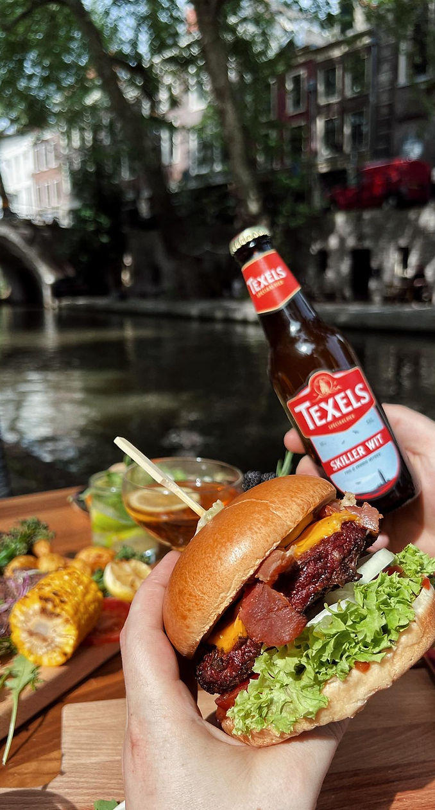
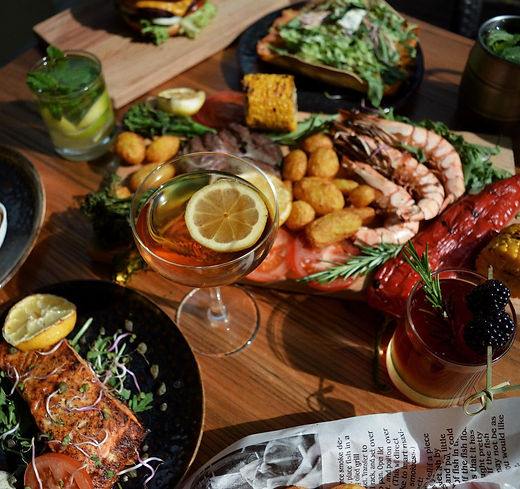
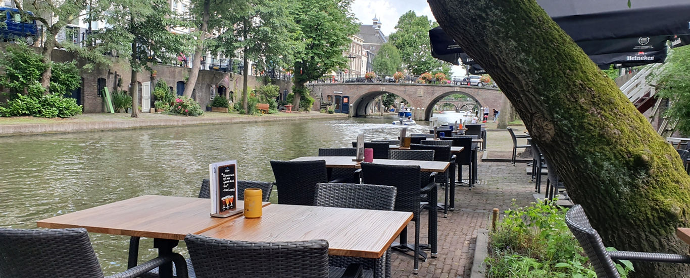
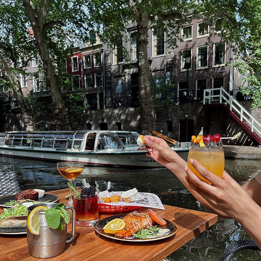

Rumpsteak
Een heerlijke, sappige runderbiefstuk, geserveerd met patat & mayo.
- 200 g
- € 21
- 300 g
- € 28
- 400 g
- € 35
- 500 g
- € 42

Oudegracht 261 · Utrecht
Sportsbar & grillrestaurant in een historische kelder aan de Oudegracht, met een ruim terras aan het water. Steaks, burgers en een koud biertje bij de wedstrijd.
Lava flamegrilled
Onze burgers gaan over de lavagrill: vol van smaak, in elke hap. Maar we zijn trots op meer dan burgers. Bestel een sappige steak of een malse rib-eye, of kies voor iets uit zee.
Onze steaks komen van de Black Angus stier uit Argentinië. De stieren grazen op de natuurlijke graslanden van de pampa's, en daar krijgt het vlees zijn kenmerkende smaak van.
Naar de menukaart
Menukaart
Alle burgers en steaks worden geserveerd met verse patat & mayo.
200 gram rundvlees, bacon, burger-relish, mosterd, sla, tomaat, ui, augurk, cheddar cheese. Geserveerd met verse patat & mayo.
200 gram rundvlees, pikante bbq-saus, sla, tomaat, ui, augurk, cheddar cheese, jalapeño pepers. Geserveerd met verse patat & mayo.
200 gram rundvlees, bacon, mosterdmayo, sla, tomaat, Amsterdamse uitjes, Old Amsterdam kaas. Geserveerd met verse patat & mayo.
Gemarineerde kipfilet van de grill, bbq-saus, coleslaw, gebakken uisnippers, Old Amsterdam kaas. Geserveerd met verse patat & mayo.
400 gram rundvlees, bacon, burger-relish, mosterd, sla, tomaat, gefrituurde uienringen, augurk, gebakken ei, cheddar cheese. Geserveerd met verse patat & mayo.
Elke maand een verrassende gourmetburger buiten de kaart. Kijk op onze Instagram of vraag een medewerker welke burger het deze maand is.
Make it veggie Verwissel het rundvlees of de kip voor onze falafelburger.
Black Angus uit Argentinië. Extra saus € 1,50: pepersaus, champignonsaus, bluecheesesaus of vleesjus.
Een heerlijke, sappige runderbiefstuk, geserveerd met patat & mayo.
Premium lendestuk, gekenmerkt door zijn vetrand, geserveerd met patat & mayo.
Heerlijk malse premium steak, gemarmerd met vet, geserveerd met patat & mayo.
Voor de echte steakliefhebber: een combinatie van onze Argentijnse steaks. Rumpsteak, entrecôte en rib-eye, geserveerd met patat & mayo.
Sweet & Sour, Teriyaki, BBQ, Hot & Spicy of Suicide. Geserveerd met verse patat & mayo.
Ca. 200 gram, uit de oven. Geserveerd met coleslaw, verse patat & mayo.
200 gram premium rib-eye steak in plakjes gesneden, truffelmayo, sla, tomaat, gebakken ui & champignons. Geserveerd met coleslaw, verse patat & mayo.
Rumpsteak van ca. 180 gram met reuzengamba's. Geserveerd met coleslaw, verse patat & mayo.
300 gram rib-eye steak, Louisville Classic Burger, coleslaw, zoete-aardappelfriet en pepersaus.
Sport
Champions is dé plek voor sportliefhebbers. Op 17 HD-schermen laten we de populairste competities en evenementen zien, zodat je vanaf elke tafel goed zicht hebt. Met een ruime keus aan eten en drinken erbij. Zoek je iets speciaals? Bel ons even, dan kijken we wat we kunnen doen.
Alle wedstrijden uit de Eredivisie, Premier League en Bundesliga, en de meeste belangrijke wedstrijden uit andere Europese competities. Niet zeker of jouw wedstrijd te zien is? Bel ons, dan laten we het weten.
We zijn trots dat we de enige plek in Utrecht zijn die alle wedstrijden van de Champions League en Europa League kan laten zien die op de Nederlandse zenders beschikbaar zijn.
We laten een grote variatie aan voetbalwedstrijden zien. Twijfel je of we jouw wedstrijd kunnen tonen? Bel ons of loop even binnen.
Alle races, sprintraces en kwalificaties live op onze grote schermen. Met je favoriete drankje en iets lekkers erbij, de hele race lang.
De nieuwste Amerikaanse sport, zoals de NFL, MLS, MLB en de NBA. Met een hapje of een koud drankje terwijl je je team aanmoedigt.
Wil je iets anders zien, zoals rugby, wielrennen of MMA? Laat het ons weten, dan kijken we wat we kunnen doen.
Arrangementen & groepen
Bij Champions eet, drink en borrel je gezellig met een groep. Voor een verjaardag, bedrijfsuitje, zakelijk diner, studentendate, borrel met vrienden of familie-uitje.
Kies uit 1-, 2- of 3-gangenmenu's, shared dining platters en heerlijke cocktails. De groepsmenu's hieronder gelden vanaf 16 personen.
Alle hoofdgerechten worden geserveerd met friet, salade en saus.
Voor groepen kun je vooraf een diner- en/of drankarrangement reserveren. Kies uit:
Zijn de standaardmenu's niet helemaal naar wens? We stellen graag een menu op maat samen. Neem contact op via e-mail of bel ons.
“Great place to watch sports! About 17 screens providing the best viewing from any table. Amazing steaks and burgers and an awesome place to have a beer. They give you the best service one could ask!!”
G. Wendrich

Over ons
Champions is opgericht in 2019 met één idee: de nummer één sportsbar en grillrestaurant van de stad worden. Met state-of-the-art schermen, lekker eten en vriendelijke service.
We willen een leuke, veilige en ontspannen plek zijn voor al onze gasten. Of je nu de grote wedstrijd komt kijken of gewoon met vrienden wilt afspreken: bij Champions zit je goed.
“Serving up the best American food in town!”
Een ruim terras direct aan het water van de Oudegracht.
Binnen eet en kijk je in een sfeervolle historische kelder, in het hart van de stad.

Reserveren
Reserveer een tafel voor een etentje, de wedstrijd of je groep. Bellen kan natuurlijk ook.
Contact
| Maandag | Gesloten |
|---|---|
| Dinsdag t/m vrijdag | 16:30 – 24:00 |
| Zaterdag en zondag | 13:00 – 24:00 |